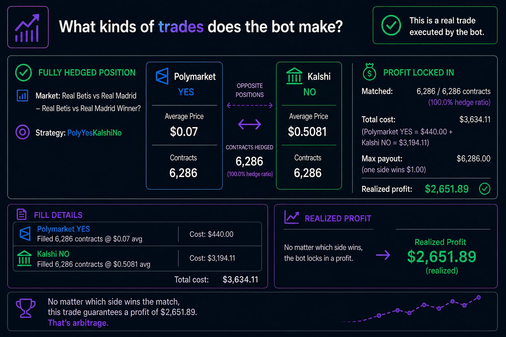

Home
Return to the project overview and full strategy summary.
Open HomeExecution structure and margin placeholders.

The bot primarily deals in live betting, prioritizing taking advantage of high volatility moments like game winning goals, placing bets before the markets can completely adjust.
Return to the project overview and full strategy summary.
Open HomeReview the pricing mismatch concept that powers this strategy.
Open What is Arbitrage?See how Polymarket and Kalshi prices are matched before execution.
Open What is a Prediction Market?Track outcomes with daily, weekly, and all-time performance views.
Open PnL Snapshot